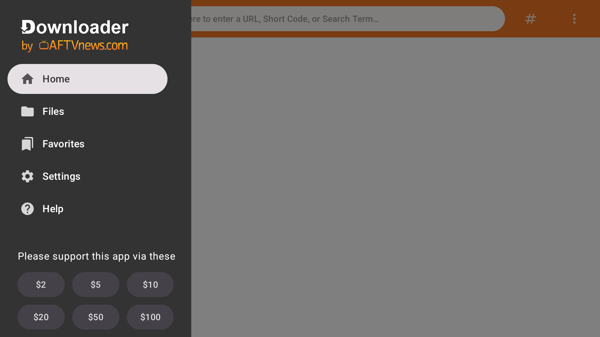

我用 Downloader 踩过的五个坑，第一个就让我以为系统废了
Downloader 装 Fire TV 应用看着简单，实则藏着权限列表空白、Vega OS 不支持侧载、下载卡连接、版本对不上老教程这些坑。每个坑的症状、根因和紧急解法，都是我踩过以后才摸清楚的。
我第一次装Downloader官网是给爸妈家的 Fire TV 棒侧载视频应用——以为就是从官方下载下个 APK 输个地址的事，结果前前后后折腾了快一个小时才跑通。说实话，这个软件看着极简，其实踩坑点不少，而且很多坑和软件本身无关，是亚马逊那边的系统在暗地里给你使绊子。写下来给后来人参考，能省点时间。

坑一：安装未知应用列表整个空了，以为被亚马逊封杀了
症状：2026 年 8 月那次系统更新之后，我打开 Fire TV 的「安装未知应用」设置页，发现之前已经授权的应用一个都不显示了，包括 Downloader 自己。侧载了两三年的老设备，突然什么也装不了。
原因：一开始我也慌了——论坛上当时盛传亚马逊终于要封侧载政策了，甚至有人说要刷机才能救。后来才知道是那次设置组件更新里带了一个无意的缺陷，属于 bug 不是政策转向。更恶心的是修复是静默推送的，系统版本号可能根本不变，你肉眼看不出来有没有被修。
解法：四步排查，从简单到复杂。先在「我的 Fire TV → 关于」里手动检查更新，把能装的都装掉；然后回设置页看看列表恢复没有；还不行就重启设备；再不行就彻底断电拔电源等三十秒再插回去——软重启清不掉的设置缓存，断电能清干净。我当时是断电之后才恢复的，差点就去 adb 命令强授权了。
坑二：新买的 Fire TV 棒里根本搜不到 Downloader
症状：朋友让我帮他新装一台 Fire TV Stick，应用商店里直接搜 Downloader，连个影子都没有。我以为是商店地区的问题，换了美区账号还是搜不到。
原因：这不是商店的问题，是他买到的那台出厂跑的根本不是 Fire OS——是亚马逊 2026 年开始推的 Vega OS，一个自研的 Linux 系统，没有安卓运行时，设计上就不支持侧载。商店里搜不到这个应用是正常现象，不是下架了。
解法：先看系统版本号，「设置 → 我的 Fire TV → 关于」里读软件版本：数字开头是 1 的就是 Vega OS，数字 7 或 8 开头才是 Fire OS。另外型号名带 SELECT、或者带 HD 还标称 Wi-Fi 6 的，基本都是 Vega OS。亚马逊商品页并不总标注系统类型，下单前最好去评论区翻一翻，或者直接按版本号逻辑对照。已经买到 Vega OS 的就别折腾了，这条路走不通，换 Fire OS 设备或者普通安卓电视盒子才行。
坑三：下载进度卡在「连接中」半小时不动
症状：输入直链按前往之后，进度弹窗出来了但一直停在「连接中」，既不报错也不走进度。
原因：这个坑我遇到过两次，一次是 Fire TV 棒插在电视 USB 口供电，电压不够导致网络模块时不时掉链子；另一次是目标站点有反爬机制，直接拦了 Downloader 的请求。第一种情况很隐蔽，因为平时看流媒体没问题，只有下载这种持续连接的场景才暴露。
解法：先排查供电——Fire TV 棒尽量用原装电源适配器插墙插，别蹭电视 USB 口。换了电源还卡的话，大概率是站点那边的问题：换个下载源试试，或者先用内置浏览器在 Downloader 里手动访问一下目标链接，看浏览器里能不能打开。浏览器能开但下载卡，说明链接本身没问题，换个时段或者换手机热点试试。
坑四：老教程里的界面和你看到的完全不一样
症状：网上搜教程，出来的截图都是双输入框、五个常驻标签页，而我打开 Downloader 只有一个居中的地址栏，菜单也全藏起来了，按教程点半天找不到对应的按钮。
原因：Downloader 在 2026 年 3 月出了 v2.0 大版本重构，界面语言从「工具箱」彻底转向「浏览器」。之前 v1.x 那套双输入框、固定标签页的界面全部废弃了。但网上大量教程还停留在老版本，搜出来十有八九是过期的。
解法：先在侧边菜单的帮助区看自己的版本号。v1.x 和 v2.x 的界面逻辑完全不同——v2 是单地址栏居中、浏览区更大、还有数字键盘支持。别硬套老教程的操作路径，按Downloader文档来。另外 2024 年 v1.5.0 还加了手机平板支持，触摸界面和电视端也不一样，别混为一谈。
坑五：下载完的文件找不到，或者卸载时提示残留
症状：明明下载完成弹过窗了，回到文件面板里却找不到刚才的 APK；或者卸载重装之后，文件目录里还留着一堆旧文件。
原因：Downloader 的存储路径在几次版本更新里变过。v1.4.4 之前用的是应用私有目录，v1.4.4 迁到了 Download/Downloader，v1.4.5 又做了全设备目录统一，v1.5.0 之后干脆把目录固定死不让改了。老用户可能同时存在多个旧目录，卸载不彻底就会残留。
解法：记住一个原则——所有文件都在 Download/Downloader 这个文件夹里，这是 v1.4.5 之后统一的，不管你用哪个版本都按这个路径找。文件面板就是这个目录的直接视图，面板里没有就是真的没下载成功，别去翻其他路径。装完应用就删安装包，电视盒子存储金贵，留着全是垃圾。

防坑速查清单
- 系统更新后必查权限：每次 Fire TV 大版本更新，先去「安装未知应用」看一眼列表还在不在，三十秒的事，别等侧载挂了才反应过来。
- 下单前查版本号：买新 Fire TV 设备前，确认型号不是 SELECT 系列、不是 Vega OS，版本号 7/8 开头才是能侧载的 Fire OS。
- 供电用原装适配器：Fire TV 棒别插电视 USB 口供电，下载场景对电压稳定性要求比看视频高。
- 看版本号再找教程：v1.x 和 v2.x 界面差十万八千里，先确认自己跑的是哪版再搜对应的说明。
- 装完即删：APK 安装完就删，别攒，电视盒子空间比你想象的小。
知道这些坑之后，Downloader 其实相当省心——它就是个干净利落的下载工具加浏览器，不搞花活。但架不住外面变量太多，亚马逊那边随手更个系统、出个新硬件，都能把侧载链路搞断。踩过一遍记住这些，后面用起来就顺了。这套侧载相关的资料我顺手备份了多份，GitHub、Gitee、GitCode 都有存，国内访问选 Gitee 或 GitCode 更快。